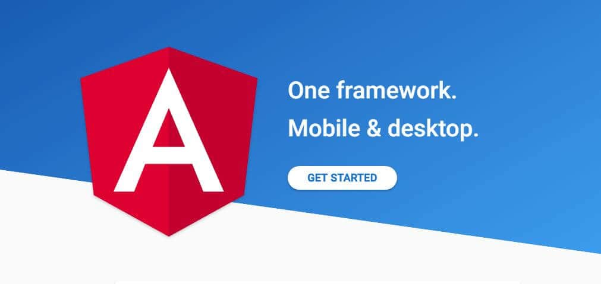
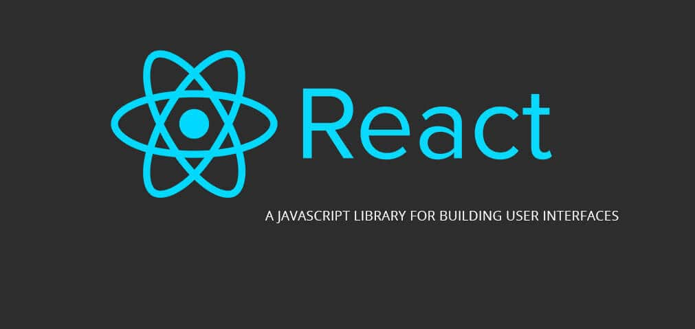
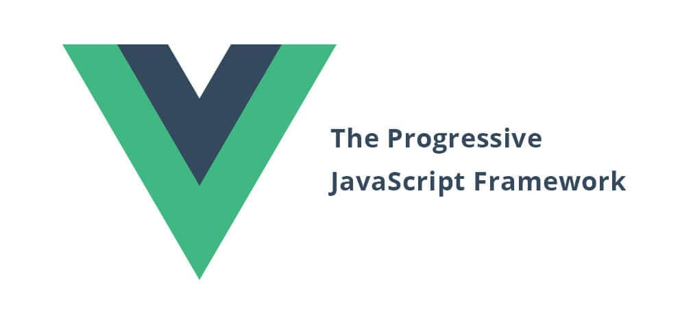
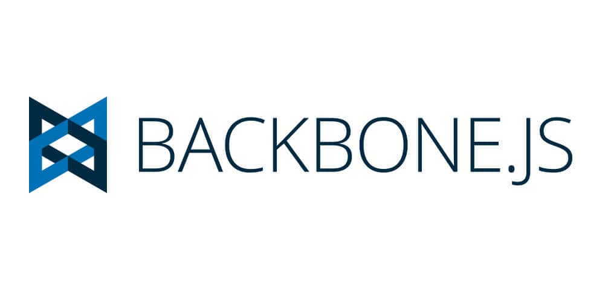

<div class="section blog" id="my-works">
  <div class="blog__content">
    <div class="tab-container blog__content-tab-wrap" id="tab-full-container">
      <div class="etabs blog__content-tab-cont">
        <div class="blog__content-tab-cont-fixed js-fixed-menu"><span class="tab blog__content-tab-item" id="tab-1"><a class="blog__content-tab-item-link" href="#tabs-sass">TOP 4 JavaScript фреймворка 2018</a></span><span class="tab blog__content-tab-item" id="tab-2"><a class="blog__content-tab-item-link" href="#tabs2-html">Плюсы и минусы фриланса</a></span>
          <div class="blog__content-tab-circle"></div>
        </div>
      </div>
      <div class="panel-container blog__content-tab-panel">
        <div class="blog__theme" id="tabs-sass">
          <div class="blog__theme-item">
            <h2 class="blog__title-item">TOP 4 JavaScript фреймворка в 2018 году</h2>
            <div class="blog__title-image"></div>
            <div class="blog__title-text">
              <p class="blog__text-item">Javascript является одним из самых популярных языков программирования, используемых для разработки веб-страниц наряду с HTML и CSS. Javascript - это легкий, объектно-ориентированный, интерпретируемый язык сценариев, который работает на стороне клиента. Кроме того, существуют различные JavaScript фреймворки, которые могут работать как на стороне клиента, так и на стороне сервера, помимо того, что они быстры, у них есть еще множество преимуществ, такие как сокращение серверного трафика путем проверки пользовательского ввода, обеспечивающего немедленный ответ без перезагрузки страницы. Javascript также добавляет множество возможностей для работы с изменениями контента страницы, реагирующих на действия пользователя, такие как наведения мыши, перетаскивания, и анимации. Если вы хорошо владеете Javascript, изучение одного из фреймворков не займет у вас много времени. Фреймворки Javascript позволяет делать больше с меньшим количеством кода, экономят время и повышает производительность. Также, они поддерживают унифицированный API браузера, поэтому вам не нужно думать о их совместимости.</p>
            </div>
            <h2 class="blog__title-item-h3">TOP 4 JavaScript фреймворков в 2018 году</h2><a class="blog__title-item-link" href="https://angularjs.org/" target="_blank">ANGULAR.JS</a>
            <div class="blog__title-image">
              <p class="blog__text-item">Angular.js является одним из самых популярных фреймворков Javascript, используемых для создания одностраничных веб приложений SPA(single page application). С помощью него любой может построить динамические, интерактивные и быстрые веб-страницы, которые помогают сэкономить кучу вермени на перезагрузке содержимого веб-страниц. Это означает, что весь контент сайта напрямую передается от  сервера в браузер, что ускоряет работу сайта в целом. С ним вы также можете создавать мобильные и десктопные приложения.</p>
            </div><a class="blog__title-item-link" href="https://reactjs.org/" target="_blank">REACT.JS</a>
            <div class="blog__title-image">
              <p class="blog__text-item">Те, кто не первый день в сфере веб-разработки, уже знают, что React.js - это быстро развивающийся фреймворк, популярность которого стремительно растет. Вы можете построить полнофункциональное динамическое приложение, используя только React.js. Одним из преимуществ использования React.js является то, что он чрезвычайно эффективен для SEO(поисковой оптимизации).</p>
            </div><a class="blog__title-item-link" href="https://vuejs.org/" target="_blank">VUE.JS</a>
            <div class="blog__title-image">
              <p class="blog__text-item">Vue.js хорошо подходит для быстрой и кросс-платформенной разработки интерактивных веб-интерфейсов. Это прогрессивный JavaScript фреймворк, который легко изучить и начать с ним работать. Vue.js собрал в себе лучшие качества от React.js и Angular1. Крутая, понятная документация на русском языке, это еще один несомненный плюс этого замечательного фреймворка.</p>
            </div><a class="blog__title-item-link" href="http://backbonejs.org/" target="_blank">BACKBONE.JS</a>
            <div class="blog__title-image">
              <p class="blog__text-item">Backbone.js быстро завоевал популярность благодаря своей простой и гибкой структуре. Он основан на (MVP) парадигме проектирования приложений и используется для синхронизации различных частей веб-приложения. Backbone.js легок в использовании и очень гибок, обладает минимальной структурой данных, что упрощает его использование.</p>
            </div>
          </div>
        </div>
        <div class="blog__theme" id="tabs2-html">
          <div class="blog__theme-item">
            <h2 class="blog__title-item">Как круто работать дома(или нет)</h2>
            <div class="blog__title-image"></div>
            <div class="blog__title-text">
              <h2 class="blog__title-item-h3">Насколько хорош фриланс? </h2>
              <p class="blog__text-item">Многие из нас хотябы раз задумывались о удалённой работе. Взять ноутбук, плавки, и махнуть в тёплые края! Давайте рассмотрим некоторые положительные и отрицательные стороны такой работы.</p>
              <h3 class="blog__title-item-h4">Плюсы:</h3>
              <p class="blog__text-item">Сам себе хозяин. Если вас не устраивает начальство или коллектив на работе, фриланс не избавит вас от этих проблем. В любой отрасли необходимо уметь общаться и находить общий язык с людьми. Тут тоже есть начальники(заказчики) и может быть свой коллектив(другие фрилансеры). Но работать бесплатно сверх нормы или куда-то отпрашиваться вам больше не придется.</p>
              <p class="blog__text-item">Свободный график. Вы сами можете планировать свой день. Встать пораньше, поработать до обеда и поехать в тренажерный зал, или работать по 10-15 часов в сутки, перед дедлайном:)</p>
              <p class="blog__text-item">Тут всё по честному. Как потопаешь так и полопаешь. Заработок зависит на 100% от тебя. Недостаточно быть хорошим программистом. Необходимо уметь общаться с людьми, постоянно учиться новому и повышать свою квалификацию. Быть дисциплинированным и организованным.</p>
              <p class="blog__text-item">Работа с зарубежными клиентами. Наши в этом плане не самые лучшие и не всегда готовы хорошо платить за качественную услугу. Фрилансер может найти заказы на зарубежных сайтах, где оплата в валюте, и на порядок выше чем по РФ. Но без знаний английского языка вам не обойтись.</p>
              <p class="blog__text-item">Живите где хотите. Занимаясь фрилансом, можно жить где угодно. Главное, чтобы был хороший интернет. Если вы снимаете жилье в СПб или МСК, можно переехать, например, в Тайланд, где стоимость проживания и аренды будет ниже, солнце, море и прекрасный климат. </p>
              <p class="blog__text-item">Работа из дома. В Санкт - Петербурге дорога до работы в среднем занимает 1.5 часа туда и 1.5 часа обратно. Для мегаполиса это типо нормально. Несложно посчитать сколько часов улетит в месяц или год. Фриланс это отличный способ сэкономить время и посвятить его себе или своим близким.</p>
              <p class="blog__text-item">Работайте с кем хотите. Можно собрать команду из фрилансеров, чтобы брать более крупные заказы. И в любое время сменить коллектив. </p>
              <h3 class="blog__title-item-h4">А теперь о минусах:</h3>
              <p class="blog__text-item">Если не будете заниматься спортом, и вести активный образ жизни, то рискуете быстро получить целый набор проблем со здоровьем. </p>
              <p class="blog__text-item">Надо контролировать себя, иначе, снизится ваша производительность, и соответственно доход. Не все могут работать максимально эффективно, когда можно посмотреть свой любимый сериальчик или ютуб, Ну вы поняли:)</p>
              <p class="blog__text-item">Соц пакет? Не, не слышал! Не заплатив налоги, не надейтесь на пенсию (у нас же достойная пенсия в стране, вы разве не знали?). Фрилансеру никто не оплачивает больничный или отпуск. Но что мешает в этот период трудиться по 3-4ч в день и продолжать зарабатывать? Вообщем это спорный пункт.</p>
              <p class="blog__text-item">Трудности в начале пути. Обычно первый год у фрилансера самый тяжелый. Придется много работать, много учиться, мало спать, постоянно искать заказчиков, и даже есть дошики с кетчунезом. (Если у вас папа не бизнесмен конечно). Если не сдадитесь и будете хорошо выполнять свою работу, рано или поздно у вас появятся постоянные клиенты, пойдет сарафанное радио, и ваши старания обязательно окупятся!</p>
              <h3 class="blog__title-item-h4">Итого</h3>
              <p class="blog__text-item">Cказать что прибыльнее на сегодняшний день, фриланс или офис, достаточно сложно, так как зарплаты программистов, например, в банковском секторе очень высоки, и лишь немногие фрилансеры смогут выйти на такой уровень. Но кому-то и в Тайланде неплохо живется младшим разработчиком с зп в 40 тысяч рублей. Это всё индивидуально:)</p>
            </div>
          </div>
        </div>
      </div>
    </div>
  </div>
</div>